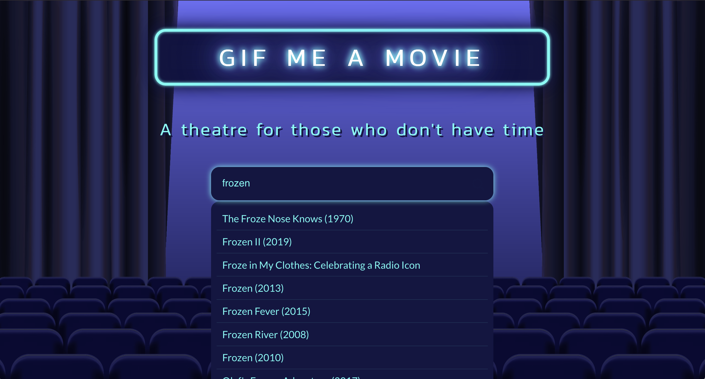
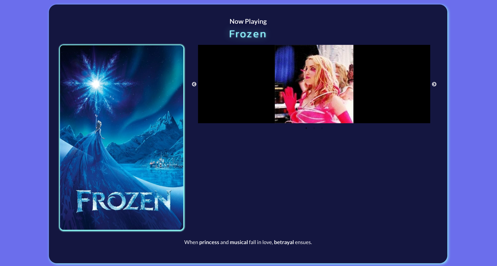

This was a collaborative, agency style project with Vipin Kirthane, Yiying Zou, and Andrew Alexander. The user enters in a movie and recieves gifs related to the movie. It uses the MovieDB API and the Giphy API.
When the user types in their selection, the MovieDB API is called to generate a list of options. When the user makes a selection, the API is called again to grab a list of keywords associated with the movie. Three are selected, and used to make a call to the Giphy API.

From there, three gifs are generated and displayed on the page, automatically playing in a carousel. The keywords used to describe the movie are shown in a tagline underneath the gifs.
